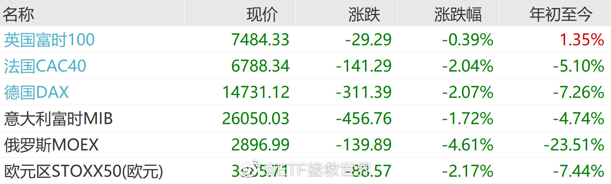

今天的红利，有至少一半的朋友没有卖出。我很欣慰，两个原因。第一，说明各位还有资金，不必卖出再买入。第二，说明各位有了独立思考能力。对错不说，至少会选择自认为更加符合自己情况的操作了。有一天每位朋友都能自己做出理性而智慧的操作，我的愿望就实现了。
回复@Lateatnight86:默在欧盟内部一直奉行务实态度，顶住了漂亮要求欧洲一起制裁我们的压力。默一直追求欧洲自主，不愿意完全跟随漂亮的指挥棒。我说她有远见是指国际事务。他们国内事务我不操心。@ETF拯救世界:漂亮是真的又狠又鸡贼。为了自己的好日子能持续，为了自己继续当老大，上蹿下跳，无所不用其极。其实每个国家都希望自己好，区别是有的对别的国家更没有下限一点。为了不让欧洲团结，不让亚洲团结，为了让世界乱成一锅粥，它获取最大利益，漂亮真是一直在努力，从未被超越。只是仇恨没有意义，最重要的是自己强起来，能够多交一些有远见的朋友，干到它能老实一点。
漂亮是真的又狠又鸡贼。为了自己的好日子能持续，为了自己继续当老大，上蹿下跳，无所不用其极。其实每个国家都希望自己好，区别是有的对别的国家更没有下限一点。为了不让欧洲团结，不让亚洲团结，为了让世界乱成一锅粥，它获取最大利益，漂亮真是一直在努力，从未被超越。只是仇恨没有意义，最重要的是自己强起来，能够多交一些有远见的朋友，干到它能老实一点。
网格3.5正在进化完善中。这次的进化，主要希望解决的问题是，如何在交易过程中保证资金投入的可持续性，避免在战役与整个战场上，因战线过长出现兵力不足的问题。同时，顺便解决底部波段收益率不够的问题。绝不满足，发现问题、解决问题，永远要进化。
今日数据：没有亮点，让我大失所望。科创50历史首次跌破60倍算吗？当然不算。50和300跌到现在居然还不便宜，事实再次教育了我。每次当我不完全相信自己的数据时，都会犯错。高位的50和300减持的不够，正是因为没有完全相信数据。高位更换成分股，把涨幅巨大的品种调入大指数，对大指数伤害太大了。尤其是这种抱团的情况，把一部分股票价格打到天上更会导致这个问题非常严重。虽然50仓位卖得只剩3%，300只剩5%，但依然要反思。
消费终于开始低下高昂的头颅。总是埋怨它不是讨厌它，而是爱它，怕它走在歪路上一去不回。@ETF拯救世界:我心中的最大的怨念依然是消费。2020年5月以来的疯癫状态，到底怎样才会结束。即使跌到现在，它居然依然还没有进入我定义的可买入区间上限。是我错了还是市场错了。所有板块，只有它依然无法哪怕下手一点点。这是道德的沦丧，还是人性的扭曲。
换句话说，18500的恒生，与80%的中概/恒科，将是波段加仓的最后底线。@ETF拯救世界:恒生下一网将是该品种最后一网，接下来也不会再继续下网了。这是考虑到市场、持仓状态等因素决定。之前的当然继续交易。当然，有余力的朋友可以继续制定自己的交易计划。恒科大概还会有2-3网，之后也不会继续再下。理由与恒生一致。
恒生下一网将是该品种最后一网，接下来也不会再继续下网了。这是考虑到市场、持仓状态等因素决定。之前的当然继续交易。当然，有余力的朋友可以继续制定自己的交易计划。恒科大概还会有2-3网，之后也不会继续再下。理由与恒生一致。
昨天带儿子去爬野山，妹想到是一座很有难度的山，大意了，没有躲。快到山顶的时候，我看着两边的峭壁，看着难以攀爬的岩石，想起了各位每天来看我的老爷们，想起了居委会大妈对我的谆谆教导，想起了小学老师在黑板上写字吱吱呀呀的声音。我想，我要是出了点事，对得起谁呀我…对儿子说，要不咱们往回走吧…儿子看了看下山的路：我怎么觉得往下更难。我回头一看，一阵头晕目眩…下山的路上，我给儿子讲了很久风险与收益的取舍问题…
各位认为，进入大规模战争的标志是什么。以这次俄乌为例@ETF拯救世界:兄弟我做了一些关于战争与股市走势的研究，随便说两句，您随便看看。第一，直接或间接参与的战争会影响股市走势。第二，对于大国来说，局部战争不会影响很大。第三，对于大规模的战争，还是要躲一躲。跌幅不会小。第四，不能等战争结束再重新入场，那已经晚了。最佳入场时机是胜负天平开始倾斜的时候——当然，一般人也看不出来。
我有几个投资原则，分享给各位：第一，本金安全永远第一。第二，一个品种占我整个金融资产的比例不会超过20%。金融资产包括所有可以用的货币类，债券类，股权类品种。第三，任何情况下都是用闲钱投资。不会因为“大机会”就赌上所有。机会有很多，命只有一条。留够两三年的生活费，至少一年。我认为自己一定会在投资上犯错，但没有任何错误能让自己死，也没有任何品种清零能让自己死。仅供参考。